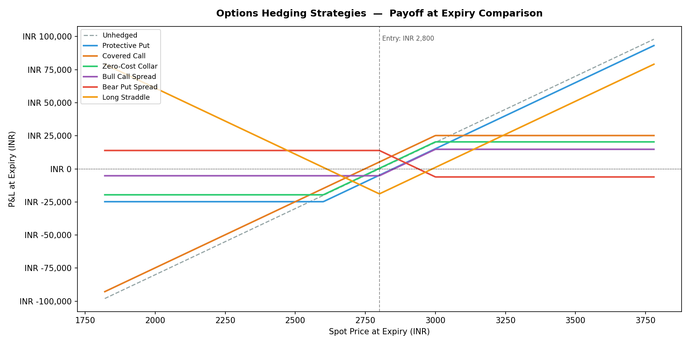
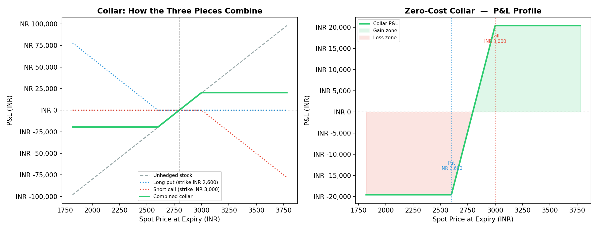
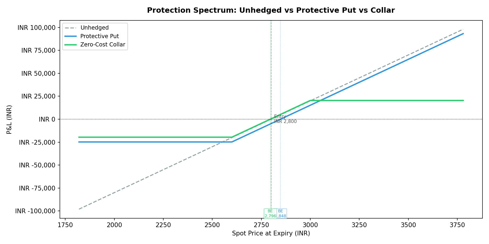
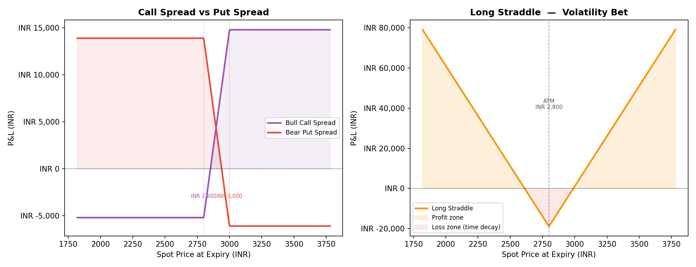
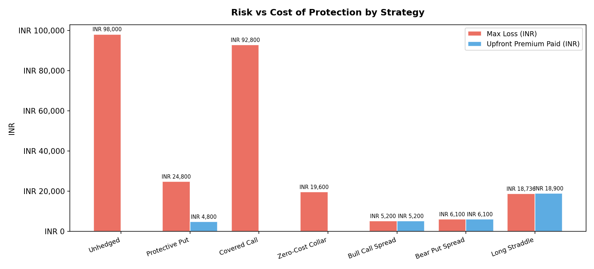

A payoff visualiser for collars, protective puts, spreads, and straddles — built to make the trade-offs between protection and participation visible in rupee terms.
When someone says they've "hedged" a position, that statement is almost always incomplete. What did they give up to hedge it? How much does the protection cost — not just in premium, but in capped upside, in shifted breakevens, in complexity? Every hedge is a trade-off, and most conversations about hedging skip straight past the trade-off to the conclusion.
This gap shows up constantly with retail investors and even junior desk analysts: "zero-cost collar" gets described as free protection, full stop. Nobody asks what was given up to get that zero. The business pain is real — a client or a trader who doesn't see the actual payoff shape can end up in a structure that doesn't match their actual view, and only discovers the mismatch when the market moves.
I could have written this as a qualitative comparison — a table of pros and cons per strategy. I rejected that: qualitative descriptions are exactly what let "zero-cost" framing slide past people unchallenged. The only way to make the trade-off undeniable is to compute the exact payoff at every spot price and plot it.
I built this around one concrete scenario — 100 units of an underlying position at INR 2,800 — and priced all six strategies against the same underlying, the same expiry, the same starting point, so they're directly comparable rather than abstract examples with different assumptions baked in.
Qualitative pros/cons table. This is exactly the format that lets "zero-cost" framing go unchallenged — it describes strategies without quantifying what each one actually costs.
Exact payoff computation across one shared scenario. Same underlying, same expiry, same starting price for all six strategies — trade-offs become a direct, visual comparison instead of six separate stories.
Payoff functions computed as vectorized arrays across a spot-price range, not point-by-point — makes the smooth payoff curves and exact breakevens possible.
Breakeven prices rarely land exactly on a computed grid point; interpolating between the nearest two points gives an exact rupee-level breakeven instead of an approximate one.
Overlaying all six payoff curves on shared axes is what makes the trade-offs visible at a glance — this is a case where the chart is the finding, not just an illustration of it.
The chart below shows all six strategies at once, measured at expiry.

The zero-cost collar is often presented as the best of both worlds: you buy a put for downside protection and sell a call to finance it, paying no net premium. In our scenario, the INR 2,600 put costs INR 48/unit; the INR 3,000 call is sold for INR 52/unit — a small net credit. No cash out of pocket.
But look at what you've traded away. The left side of the collar: your loss is floored at approximately INR 19,600 — you can't lose more than that no matter how far the underlying falls. The right side: your gain is capped at INR 20,400 — if the underlying goes to 3,500, you miss that entire move. The collar cost nothing in premium but it cost you your participation in a large rally.

A protective put (long underlying + long put) is the simplest hedge: you pay INR 48/unit for the right to sell at INR 2,600 regardless of where the underlying goes. Your downside is floored. Your upside is unlimited.
What's not immediately obvious: the premium you paid shifts your breakeven. Without the hedge you break even at INR 2,800. With the put, you break even at INR 2,848 — the underlying needs to rise INR 48 just to cover the insurance cost. If the underlying stays flat, you lose the premium. If it rises modestly, you've paid for protection you didn't need.
This is the core tension of protective puts: the scenarios where you most want the insurance are the ones where you're glad you have it, but in every other scenario you've paid unnecessarily. The collar eliminates that cost — at the price of capping your upside.

A bull call spread is a cheaper way to express a bullish view. Instead of buying a single call (expensive), you buy the lower strike call and sell the higher strike call to offset some of the cost. In our example: long the INR 2,800 call, short the INR 3,000 call. Net debit: INR 52/unit (vs. perhaps INR 98/unit for just the outright call).
What you've sold away: the profitable part of the move above INR 3,000. If the underlying goes to 3,400, the spread still only pays you the difference between the two strikes minus the premium — INR 14,800 total. The pure call would have paid much more. But the spread cost less than half as much to enter, and the maximum loss is just INR 5,200 vs. INR 9,800 for the outright call.

The straddle (long ATM call + long ATM put) is structurally different from all the other strategies. It doesn't care which way the underlying moves — it profits from a large move in either direction. What it needs is movement.
The breakeven points sit at INR 2,611 and INR 2,989 — the underlying needs to move at least INR 189 (6.75%) in either direction by expiry for the straddle to be profitable. Inside that range, the position loses money every day from time decay. At expiry with the underlying exactly at INR 2,800, you lose the full INR 18,900 in premium.
Straddles are typically bought before a major event — a results announcement, a regulatory decision, a macro data release — where the direction is unclear but a large move is expected. The trade-off is that you pay for two option premiums, and time is working against you from the moment you enter.

Drag the underlying's expiry price and watch what each strategy actually pays out — the same six curves from the chart above, but now with an exact P&L readout at whatever price you pick. This is the point of the whole exercise: "zero-cost" and "capped upside" stop being descriptions and become numbers you can check yourself.
Starting price INR 2,800, 100 units, same strikes and premiums used throughout this page. Move the slider past INR 3,000 to see exactly where the collar and bull spread stop participating.
| Strategy | Max Loss | Max Gain | Best used when |
|---|---|---|---|
| Protective Put | INR 24,800 (floored) | Unlimited | Bullish but want disaster insurance |
| Covered Call | Unlimited | INR 25,200 | Neutral-to-slightly bullish; generate income |
| Zero-Cost Collar | INR 19,600 | INR 20,400 | Want defined risk on both sides, zero premium |
| Bull Call Spread | INR 5,200 | INR 14,800 | Moderately bullish, want cheap directional exposure |
| Bear Put Spread | INR 6,100 | INR 13,900 | Moderately bearish with limited risk |
| Long Straddle | INR 18,900 | Unlimited | Large move expected, direction uncertain |
Each strategy has a different number of legs and a different premium structure. Normalizing all six onto one shared spot-price axis — with consistent sign conventions for premium paid vs. received — took more care than the underlying options math itself.
A coarse price grid gives you an approximate breakeven; getting the exact rupee figure (e.g. INR 2,848, not "around 2,850") required interpolating between grid points rather than just reading off the nearest one — small detail, but it's the difference between a real number and a rounded guess.
Working through the exact numbers — not qualitative descriptions but actual INR payoffs at every spot price — made the trade-offs concrete. The collar's "zero cost" framing always bothered me slightly because it obscures the real cost, which is the forfeited upside; the payoff diagram makes that visible immediately, since the two flat regions on either side are the exact amount you've given up.